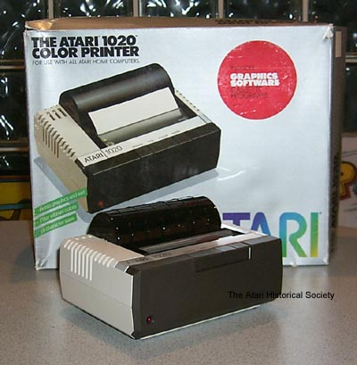

The Atari 1020 Color Printer was the only released color printer ever made by Atari. It had a 40 column printing width and used 4 color pens to combine and drawing up to 256 colors. The printer was small and fairly quiet. It came packaged with Atari Graphics cassette program (Later, Atari released Atari Graphics in cartridge form and was shipped with the Atari CX-75 Light-pen in Cartridge form). The printer was simple to use, you plugged it in, powered it on, draw your pictures and printed, very straight forward and simple. Atari's 1983 version of Plug N Play which so eagerly touted by today's software/hardware manufactures. For printing color graphics in programs outside of Atari Graphics, example code was included so that users could write their own programs and use color printing with them.